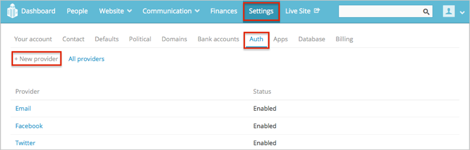
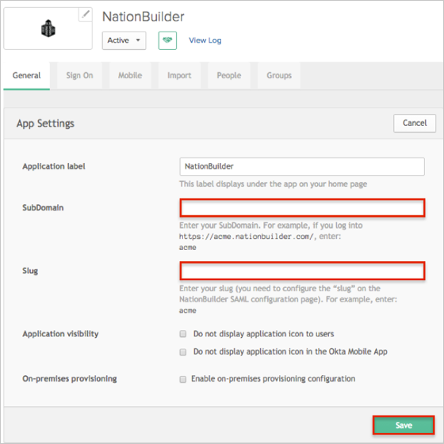

Login to your NationBuilder account as an administrator.
Navigate to Settings > Auth.
Click the + New provider link:

Enter the following values:
Name: Okta.
Slug: Okta (this can be any value).
Unique ID: Copy and paste the following:
Sign into the Okta Admin Dashboard to generate this variable.
Single sign-on endpoint URL: Copy and paste the following:
Sign into the Okta Admin Dashboard to generate this variable.
Single sign-out endpoint URL: Leave this field empty.
X.509 certificate: Copy and paste the following:
Sign into the Okta Admin Dashboard to generate this variable.
Optional. Check the Give new users control panel access: box, then assign permission set to a user, select the preferred role (Admin or Staffer.
Click Save.

In Okta, select the General tab for the NationBuilder app, click Edit, then enter the following:
Your SubDomain.
Your Slug (see step 4).
Click Save.

Done!
Notes:
SP-initiated flows, IdP-initiated flows, and Just in Time (JIT) provisioning are all supported.
For SP-initiated flows:
Open: https://[yourSubDomain].nationbuilder.com/forms/user_sessions/new.
Click the button for the authentication provider you’ve connected to Okta.